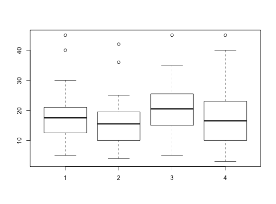

Data for Exercise 10.55
A data frame with 80 observations on the following 6 variables.
Kitchens, L. J. (2003) Basic Statistics and Data Analysis. Duxbury
str(Delay)#> 'data.frame': 80 obs. of 6 variables: #> $ CarrierA: int 20 14 12 20 17 30 19 7 22 18 ... #> $ CarrierB: int 15 17 10 36 18 20 5 16 20 13 ... #> $ CarrierC: int 20 27 22 35 26 24 15 17 10 25 ... #> $ CarrierD: int 25 17 10 5 22 35 19 24 3 20 ... #> $ delay : int 20 14 12 20 17 30 19 7 22 18 ... #> $ Carrier : int 1 1 1 1 1 1 1 1 1 1 ... #>attach(Delay) boxplot(delay~Carrier)kruskal.test(delay~as.factor(Carrier))#> #> Kruskal-Wallis rank sum test #> #> data: delay by as.factor(Carrier) #> Kruskal-Wallis chi-squared = 3.7529, df = 3, p-value = 0.2894 #> #>detach(Delay)